Battery Energy Storage Systems (BESS) have emerged as critical infrastructure for the global energy transition, enabling grid stability, renewable integration, peak shaving, and frequency regulation. Yet as deployments scale from pilot projects to gigawatt-hour facilities, a recurring set of engineering, design, and operational problems continue to undermine performance, safety, and financial viability.
Strikingly, data from EPRI's failure analysis database reveals that 46% of BESS failures are attributable to controls issues, 43% to balance-of-system components, and only 11% to cell failures — meaning the majority of real-world problems lie not in the battery chemistry itself, but in how the overall system is designed, integrated, and managed.
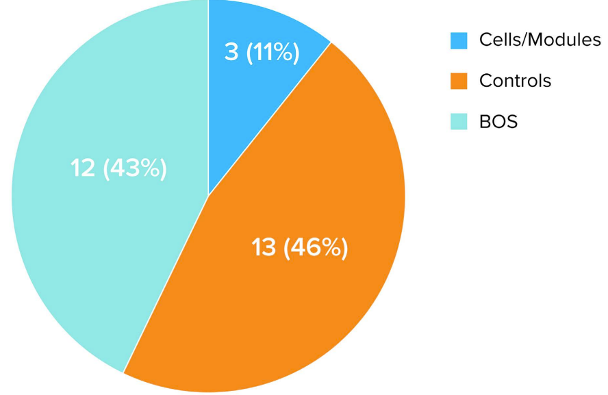
Understanding these failure modes is essential for developers, EPCs, project owners, and O&M teams who want to build BESS assets that are safe, reliable, and bankable over a 15–20-year project life.
Safety Design
The safety of energy storage systems is crucial to the success or failure of a project; any safety issues could have unimaginable consequences. Recent incidents, such as the fire at an energy storage plant in Nantong, Jiangsu, and the explosion of container batteries in California, USA, have served as a wake-up call for the entire industry. These incidents have exposed numerous safety hazards in energy storage design.
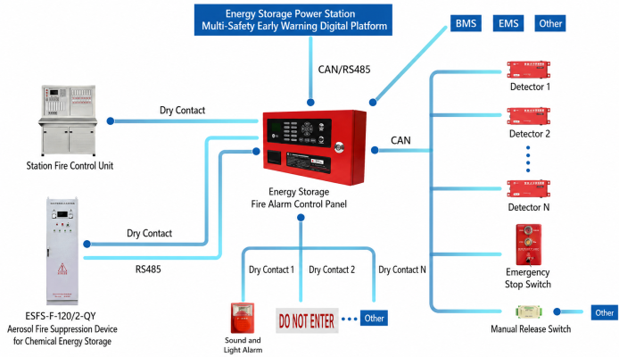
Fire hazards
Fire hazards in lithium battery energy storage systems are a major headache. Overcharging, short-circuiting, or poor heat dissipation of lithium batteries can easily lead to thermal runaway, essentially planting a "time bomb" in the energy storage system. Furthermore, some projects have serious deficiencies in their fire protection design, failing to install combustible gas detection and power off devices as required by the "Technical Specification for Fire Protection of Prefabricated Lithium Iron Phosphate Battery Energy Storage Power Stations," resulting in the inability to detect and cut off fire sources in a timely manner. Some projects also use unproven extinguishing agents, such as water to extinguish Class E electrical fires, which not only fails to extinguish the fire but also exacerbates it.
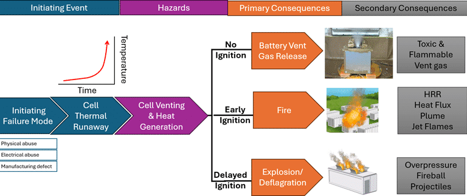
To prevent fire hazards, we must mandate the installation of BMS over temperature protection linked to the fire suppression system. This ensures timely activation of fire suppression measures should the battery temperature rise too high. Heptafluoropropane automatic fire suppression systems should be prioritized due to their high extinguishing efficiency and minimal damage to equipment. Cable trenches must be tightly sealed with fire-resistant sealant to prevent the spread of fire, while maintaining sufficient firebreaks to minimize the impact of a fire on surrounding equipment.
Battery Management System (BMS)
Battery Management System (BMS) acts as the "brain" of an energy storage system, responsible for monitoring and managing the battery's condition. However, many projects, in an effort to cut costs, use BMSs that are not CMA/CNAS certified or have their functions reduced, lacking critical features such as overvoltage and insulation monitoring protection. As a result, the BMS cannot function properly and cannot detect and handle abnormal battery conditions in a timely manner.
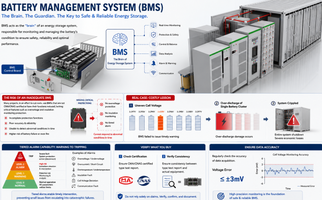
A commercial and industrial energy storage project suffered severe economic losses because the BMS failed to provide timely warnings about uneven battery voltage, leading to over-discharge damage to a single battery cluster and ultimately crippling the entire system. Therefore, a BMS must possess tiered alarm capabilities, enabling timely intervention from warning to tripping. During the selection process, it is crucial to carefully verify the consistency between the type test report and the actual equipment, and to regularly check the accuracy of data acquisition, ensuring a voltage error of ≤±3mV, so that the BMS truly becomes the "guardian" of the energy storage system.
Thermal Management Design
Insufficient heat dissipation in energy storage cabinets is a common problem in current energy storage systems. An improperly designed airflow system can lead to localized overheating; for example, in one project, the temperature difference between batteries reached 15°C, which has a significant impact on battery life and performance. In high-power scenarios, without a liquid cooling system, battery temperature will rise rapidly, accelerating battery degradation and, in extreme cases, even triggering thermal runaway.
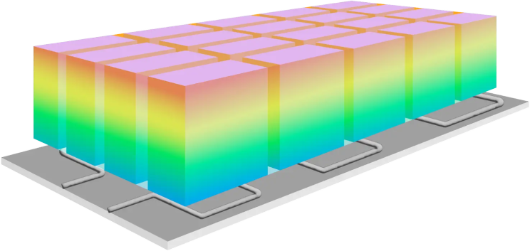
To address thermal management issues, we can optimize airflow through CFD simulation, resulting in more rational airflow and improved heat dissipation efficiency. High-capacity projects employ a combined liquid cooling and air-cooling system, fully leveraging the advantages of both methods. Each battery cluster is equipped with an independent temperature sensor to monitor battery temperature in real time and adjust fan speed, accordingly, ensuring the batteries operate at a consistently suitable temperature.
System Matching
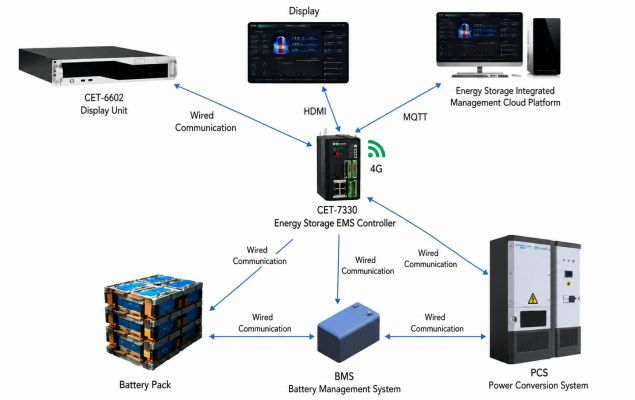
Capacity Configuration
The capacity configuration of an energy storage system directly affects the economic benefits and operational stability of the entire project. However, some novices often overlook load curves and renewable energy characteristics when designing energy storage systems, deciding on capacity based solely on guesswork. In some photovoltaic energy storage projects, the impact of consecutive cloudy and rainy days in the local area was not fully considered, and insufficient buffer capacity was not reserved, resulting in insufficient energy storage capacity during cloudy and rainy days to meet electricity demand. In industrial and commercial energy storage projects, some designers blindly add capacity according to the maximum load, resulting in serious waste of resources.
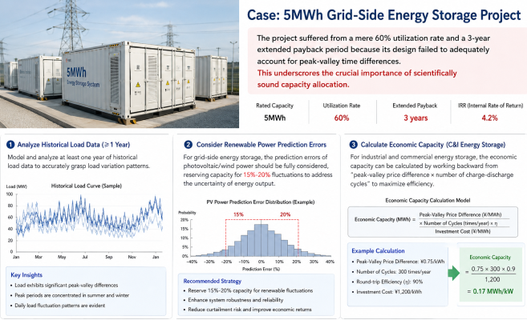
A 5MWh grid-side energy storage project suffered from a mere 60% utilization rate and a 3-year extended payback period because its design failed to adequately account for peak-valley time differences. This underscores the crucial importance of scientifically sound capacity allocation. When allocating capacity, we should model and analyze at least one year of historical load data to accurately grasp load variation patterns. For grid-side energy storage, the prediction errors of photovoltaic/wind power should be fully considered, reserving capacity for 15%-20% fluctuations to address the uncertainty of energy output. For industrial and commercial energy storage, the economic capacity can be calculated by working backward from the "peak-valley price difference × number of charge-discharge cycles" to maximize efficiency.
Equipment Selection
In energy storage system design, equipment selection is a critical step. However, some projects, in an effort to save costs, purchase low-priced PCS (Power Conversion System) that has not passed grid connection testing. These PCS often have an energy conversion efficiency of less than 95%, which not only leads to a significant decrease in system efficiency but may also cause a series of safety issues. Other projects use batteries from different batches. Since the consistency deviation between different batches may exceed 5%, it can cause uneven charging and discharging of the battery pack, accelerating battery aging, shortening battery life, and even causing malfunctions.
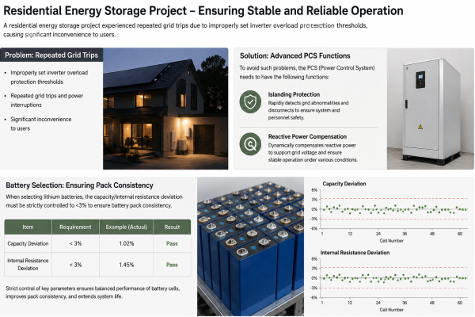
A residential energy storage project experienced repeated grid trips due to improperly set inverter overload protection thresholds, causing significant inconvenience to users. To avoid these problems, the PCS (Power Control System) needs to have islanding protection and reactive power compensation functions to ensure stable operation under various conditions. When selecting lithium batteries, the capacity/internal resistance deviation must be strictly controlled to <3% to ensure battery pack consistency. Grid-connected equipment must obtain a CNAS-certified type test report; only equipment with authoritative certification can guarantee its quality and performance meet requirements.
Electrical Design
Electrical design is crucial for the safe and stable operation of energy storage systems. Inadequate design can create hidden risks of short circuits. In some projects, cable selection was not verified for current carrying capacity; for example, using ordinary low-voltage cables for a 400V DC bus can lead to short circuits when the current is too high. Other projects lack cluster-level circuit breakers, relying solely on combiner boxes for protection. In the event of a short circuit, this cannot promptly disconnect the faulty circuit, potentially causing widespread damage and severe losses.
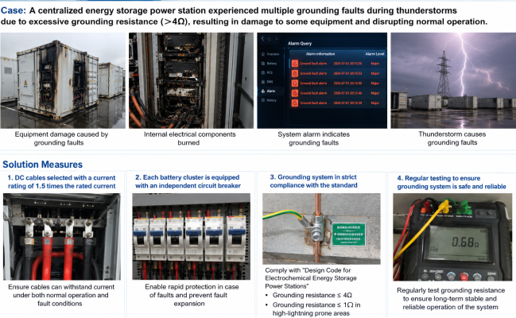
A centralized energy storage power station experienced multiple grounding faults during thunderstorms due to excessive grounding resistance (>4Ω), resulting in damage to some equipment and disrupting normal operation. To prevent similar problems, DC cables should be selected with a current rating of 1.5 times the rated current to ensure they can withstand current under both normal operation and fault conditions. Each battery cluster should be equipped with an independent circuit breaker for rapid protection. The grounding system must strictly comply with the "Design Code for Electrochemical Energy Storage Power Stations," with a grounding resistance ≤4Ω, and ≤1Ω in high-lightning prone areas, to ensure system grounding safety.
Operation and Maintenance Management
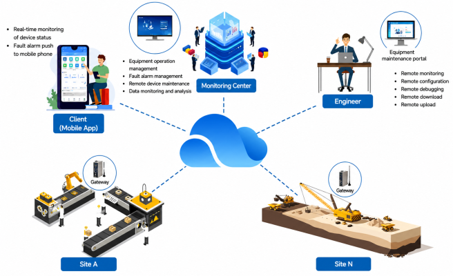
Monitoring System
In the operation and maintenance management of energy storage systems, the importance of the monitoring system is self-evident. It acts as the "eyes" of the system, monitoring its operational status in real time. However, some monitoring platforms have serious problems, only displaying "snapshots" of voltage/current, lacking in-depth data analysis and trend prediction capabilities. For example, in some energy storage power stations, the monitoring platform lacks early warning settings for abnormal fluctuations in SOC (State of Charge)/SOH (State of Health), resulting in the inability to detect abnormal changes in battery status in a timely manner. One energy storage power station failed to detect a decline in battery insulation in a timely manner, ultimately leading to a DC-side ground fault, which severely impacted the normal operation of the power station.
To avoid this situation, we should deploy a real-time monitoring system to monitor various parameters of the energy storage system 24/7. Dynamic early warning thresholds should be set; for example, if the daily SOC fluctuation exceeds 5%, an investigation mechanism should be immediately triggered to promptly identify the problem. Simultaneously, the monitoring system should be connected to the power grid dispatch platform to achieve remote control. This way, in the event of an anomaly, a rapid response can be initiated, ensuring the safe and stable operation of the energy storage system.
Emergency Measures
Emergency response measures are a crucial aspect of energy storage system operation and maintenance management. However, many projects suffer from inadequate or poorly implemented emergency measures. Some projects lack a "Battery Thermal Runaway Emergency Plan," leaving maintenance personnel helpless and unable to take timely and effective measures in the event of an emergency such as battery thermal runaway. Other projects, while conducting fire drills, have only gone as far as "watching videos" without real-world practice. This results in maintenance personnel being unable to skillfully operate firefighting equipment and quickly control fires when incidents occur. In one project, when the fire system falsely alarmed, the on-duty personnel, unaware of the manual reset procedure, mistakenly cut off the power to the entire station, causing unnecessary losses.
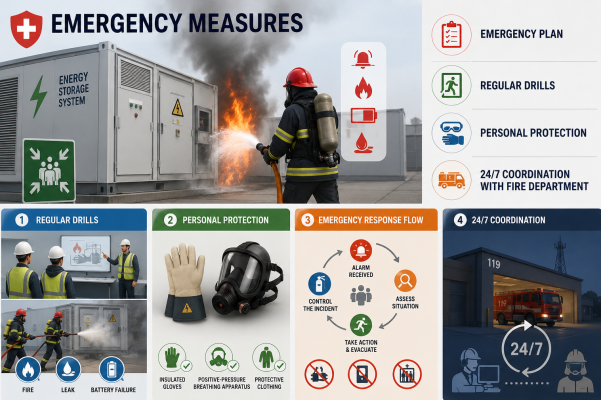
To improve emergency response capabilities, we should conduct quarterly drills simulating various emergencies such as electrolyte leaks and battery compartment fires. This will allow maintenance personnel to familiarize themselves with emergency response procedures in real-world scenarios and enhance their ability to handle unexpected events. Simultaneously, we should equip maintenance personnel with professional protective equipment, such as insulated gloves and positive-pressure breathing apparatus, to ensure their personal safety when handling incidents. Furthermore, we should establish a 24-hour coordination mechanism with the local fire department to ensure rapid access to professional fire and rescue support in the event of a fire or other major incident.
Cost and Economy
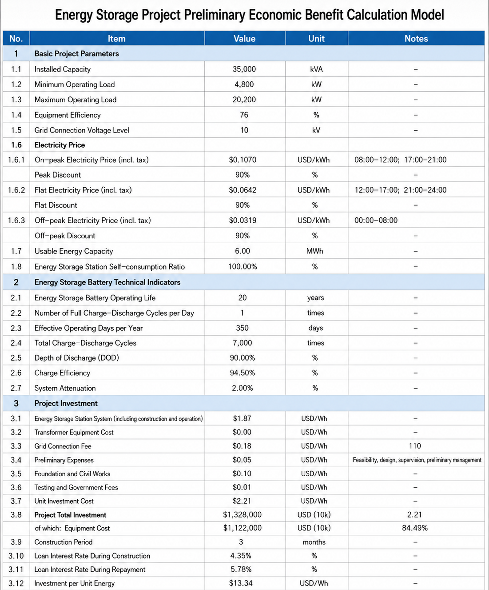
Ignoring “full life cycle” costs
Cost is a crucial factor in energy storage system design. However, many projects focus solely on battery purchase prices when considering costs, assuming that using low-cost, second-hand batteries will reduce costs, while neglecting the "total lifecycle" cost. This short-sighted approach often leads to a significant increase in costs later on.
While recycled batteries have lower procurement costs, their cycle life may be less than 3,000 cycles, meaning they may need to be replaced every 3 years. Frequent battery replacements not only increase equipment procurement costs but also incur additional installation fees. Moreover, repairing these non-standard batteries often cost 30% more than repairing standard parts, further increasing maintenance costs.
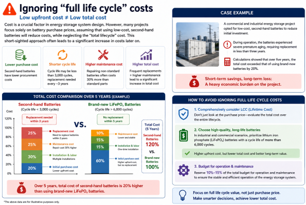
A commercial and industrial energy storage project opted for low-cost, second-hand batteries to reduce initial investment. However, during operation, the batteries experienced severe premature aging, requiring replacement in less than three years. Calculations showed that over five years, the total cost exceeded that of using brand-new batteries by 20%. This undoubtedly placed a heavy economic burden on the project.
To avoid this situation, we should comprehensively consider LCC (Lifetime Cost) when selecting batteries. In industrial and commercial scenarios, we should prioritize lithium iron phosphate batteries with a cycle life of more than 6,000 cycles. Although the initial purchase cost of these batteries is higher, their lifetime cost is lower in the long run. At the same time, we should reserve 10%-15% of the budget for operation and maintenance to ensure the stable operation of the energy storage system.
Profit Calculation
Besides cost, revenue calculation is another area where problems easily arise in energy storage system design. Some projects are overly idealistic when calculating peak-valley arbitrage, failing to fully consider practical factors such as grid dispatch limitations and charging/discharging efficiency losses, leading to deviations in revenue calculations.
In actual operation, the grid dispatcher may issue sudden peak-shaving commands based on the real-time situation of the grid, which may cause the energy storage system to fail to discharge as planned, thus affecting revenue. Moreover, during the charging and discharging process, due to factors such as the heat generated by the PCS (energy storage converter), the actual charging and discharging efficiency loss may reach 15%, rather than the ideal efficiency calculated as 90%.
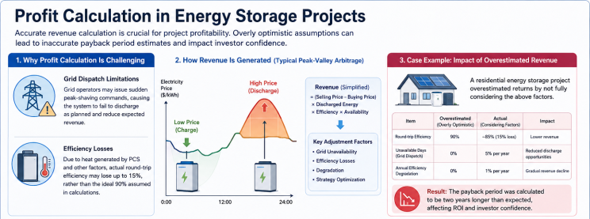
A residential energy storage project overestimated its returns by failing to adequately consider these factors during revenue calculations. As a result, the payback period was calculated to be two years longer than expected. This not only affected the project's return on investment but also damaged investor confidence in energy storage projects.
To avoid inaccurate revenue calculations, a correction factor for "unavailable days" should be included when constructing the revenue model. This is typically calculated at 5% per year to account for the impact of uncontrollable factors such as grid dispatching on revenue. Simultaneously, efficiency degradation should be considered, calculated at 1% per year, to make the revenue calculation more realistic. Furthermore, by referencing historical grid dispatching data, a reasonable charging and discharging strategy should be set to ensure that the energy storage system maximizes revenue while meeting grid demand.
Policy Compliance
Standard Implementation
Strict adherence to relevant standards is a crucial prerequisite for ensuring the safe and stable operation of energy storage projects. However, some projects, in an effort to save costs or expedite progress, skirt the edges of standard implementation, which undoubtedly creates significant hidden dangers for the projects.
For example, failure to implement the "three simultaneous" requirements (designing safety facilities and main projects simultaneously), designing safety facilities out of sync with the main project, or failing to complete full-site commissioning tests before grid connection can all lead to project failure to pass acceptance. One 10MWh energy storage power station was required to be rebuilt because its fire safety distance was less than 0.5 meters, far exceeding the stipulated safety distance. This not only delayed the project's delivery time but also increased additional costs, causing significant losses to the project.
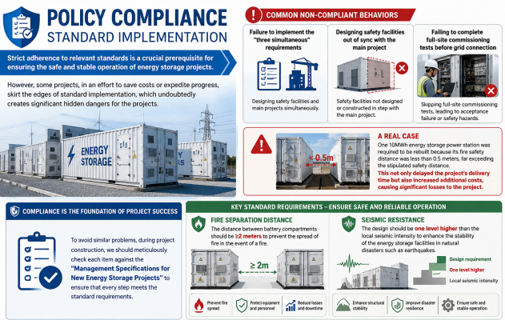
To avoid similar problems, during project construction, we should meticulously check each item against the "Management Specifications for New Energy Storage Projects" to ensure that every step meets the standard requirements. Special attention should be paid to fire separation distances; the distance between battery compartments should be ≥2 meters to prevent the spread of fire in the event of a fire. Seismic resistance is also crucial; the design should be one level higher than the local seismic intensity to enhance the stability of the energy storage facilities in natural disasters such as earthquakes, ensuring the safe operation of the project.
Filing Process
The filing process is an indispensable part of energy storage project construction. Oversights at any stage can lead to grid connection delays or even prevent normal operation. In commercial and industrial energy storage projects, neglecting grid connection approval is a common problem. If the short-circuit capacity of the grid connection point is not clearly defined, the grid company may be unable to accurately assess and connect the project, resulting in grid connection delays. In residential energy storage projects, failure to complete fire safety design filing will also expose the project to compliance risks and prevent it from passing acceptance inspections.
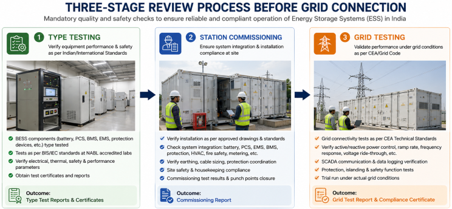
A project discovered after commissioning that, due to a lack of prior communication regarding peak-valley electricity pricing, it was ineligible for the electricity price differential policy, significantly reducing its profitability. This clearly demonstrates the importance of understanding and complying with relevant policies and regulations in advance.
To ensure a smooth registration process, we should complete a three-stage review process before grid connection: type testing, station commissioning, and grid testing. This comprehensive assessment thoroughly verifies the performance and safety of the energy storage system. Simultaneously, we should confirm the registration list with the local Development and Reform Commission and fire department in advance to understand the specific registration requirements and procedures, avoiding any omissions. A complete set of compliance documents should be retained for future reference, enabling us to provide relevant supporting materials promptly when needed, ensuring the project's compliance.

Conclusion
Energy storage design failures are overwhelmingly engineering and integration problems, not technology limitations. The most reliable BESS assets share a common design philosophy: thermal management, electrical protection, fire safety, BMS integration, and EMS logic are treated as an integrated system — not as independent work packages handed off to separate vendors. Early engagement with all these engineering disciplines during the FEED phase, rigorous power system studies, adherence to global safety standards, and climate-specific design adaptation are the keys to building BESS projects that are safe, performant, and financially bankable for their full operational life.